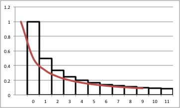

経済学で出る数学
ワークブックでじっくり攻める：応用問題
『経出る』4.4節 割引現在価値の和は，複利計算が前提．これを単利による割引現在価値にした場合の評価式.
（作成 2015.11.22）
【問１】 次の級数の収束・発散を判定しなさい．
\[
（単利による割引現在価値の和）=\sum_{t=1}^{\infty} \dfrac{w}{1+tr}．
\]
【解答】
\[
\begin{align}
\sum_{t=1}^{T} \dfrac{w}{1+tr} &\geq \int_{0}^{T}\dfrac{w}{1+tr}dt=\Bigl[\dfrac{w}{r}\log_{}{(1+tr)}\Bigr]^{T}_{0}\\
&=\dfrac{w}{r}\log_{}{(1+Tr)} \to +\infty
\end{align}
\]
なので $+\infty$ に発散する．
【解答終】
【メモ】
-
次の評価式も得られる．
\[
\dfrac{w}{r}\log_{}{(1+(T+1)r)}\geq \sum_{t=1}^{T} \dfrac{w}{1+tr}
\]

-
関数$\dfrac{1}{1+tr}$を双曲割引関数という（たぶん）．
-
関数$\dfrac{w}{r}\log_{}{(1+Tr)} $は一定の収入$w$があるときの連続時間での双曲割引による割引現在価値の和（たぶん）．
【メモ終】
【Further Reading】
Wikipeadia Hyperbolic discounting
ふろく（２）応用問題 一覧へ